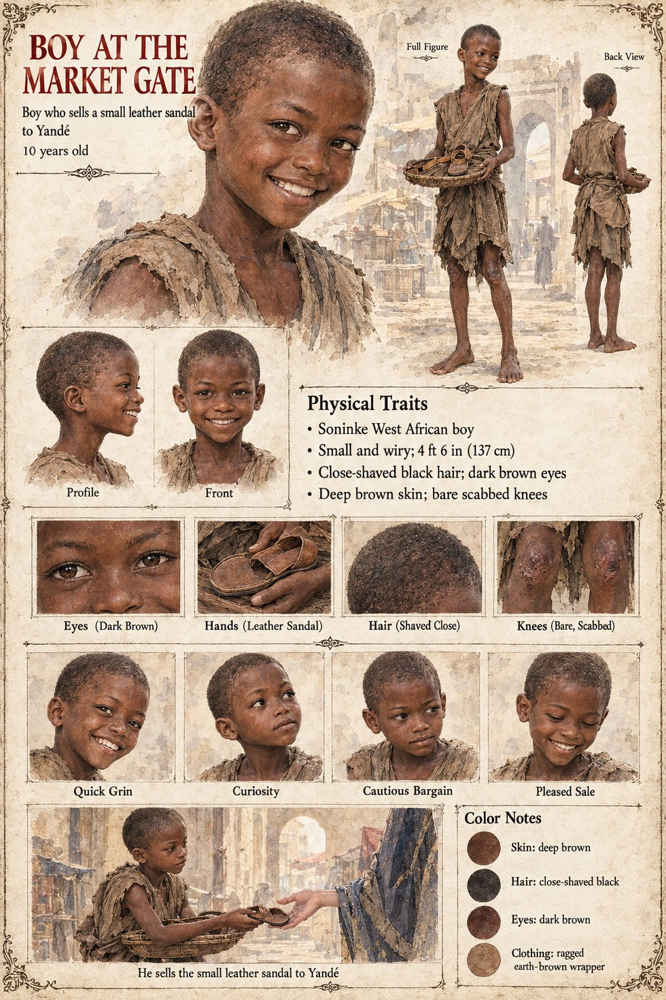

Boy at the Market Gate
A boy selling leather goods at the market gate · unnamed · 10 years old on his sheet
One clause in Chapter Eleven. On the evening she watches Kassa's servant press a twist of folded leaf into a kennel-boy's hand, Observer 1,451 buys something for the first time in five years, on the way home, from a boy at the market gate: a single small leather sandal, which she could not have said why she wanted. The sandal does more work than the sale. Her Interlude III note reports that her desk is in possession of one small leather sandal and is unable to account for the purchase. On the Uncounted Day, eleven minutes late, she finds the dog dead and walks across the yard to the heap of stolen shoes and puts it back. When Kolo buries the dog there is, on top of the hill, a small right-footed shoe of good leather, laid down as carefully as an offering, though the dog had only ever stolen left-footed ones; for eighteen years he works at who might have returned a shoe the dog never took, and never solves it. The manuscript does not say outright that the shoe on the hill is the one she bought.
The manuscript gives a boy at a gate and a sale; no age, face or name. The sheet's age of 10, small wiry build of about 4 ft 6 in (137 cm), quick grinning face, close-shaved hair, dark brown eyes, deep brown skin, bare scabbed knees, ragged earth-brown wrapper and tray of cheap leather goods are its own, as are its panels Quick Grin, Curiosity, Cautious Bargain and Pleased Sale and its scene He sells the small leather sandal to Yandé.
“a single small leather sandal, which she could not have said why she wanted”